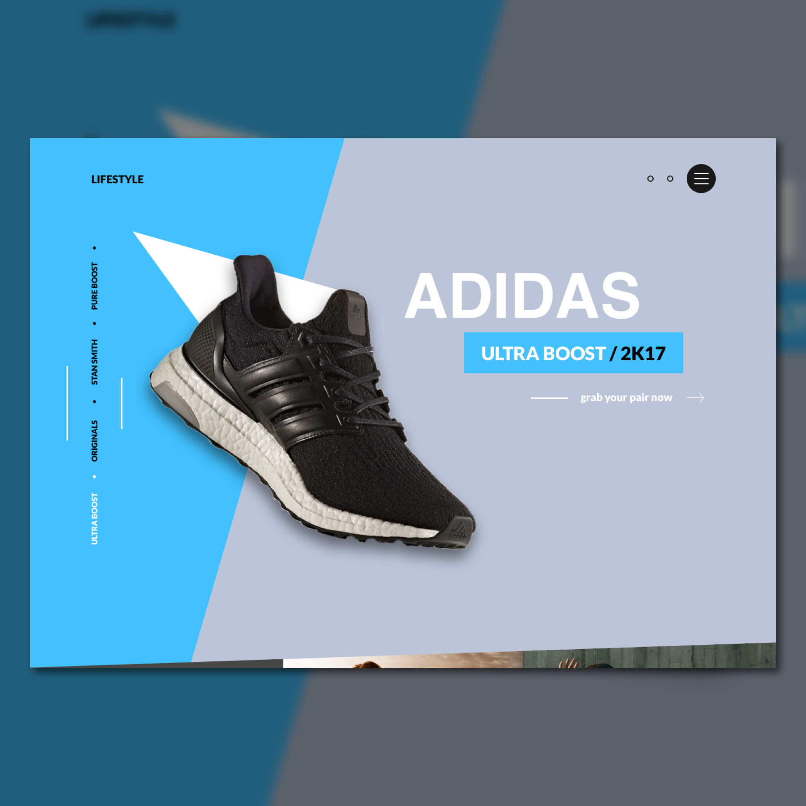

Day 83 - Never Enough Shoes
I remember saying yesterday that I was going to create visual design elements only using Sketch for the next couple designs. And of course, I decided to ignore what I said. I incorporated some of my Photoshop skills into today's design.
Today I decided to recreate this Nike landing page design . I first added the background colours (blue and grey), then started to think of ways to capture an Adidas sneaker in PNG format. After many searches, I couldn't find one that I liked. I wanted to get the best angle, but those that had the angle I wanted, had a coloured background. So, I decided to just go along with it and thought that I could take the background out using the Magic Wand crop tool. However, the magic wand wasn't as accurate as I would've wanted. Because of that, I decided to go back to Photoshop and use the Selection Tool, which worked great. In order to get the transparent background from Photoshop, I had to play around with the layers then save it as PNG. It wasn't hard especially when Google was on your side.
As for the text, I used Helvetica instead of Lato because it produced the kind of text I wanted - vertically longer and bolder. Also, for the rotated text on the left side, I decided to do the opposite than the one on Dribbble. It's becaue I find having the white text is a better signal to let the user know which page they're on. The white on blue is also more obvious than black on blue.
In the next couple designs, hopefully I won't go back to Photoshop, unless I'm desperate. I'll continue building on my visual/UI skills in Sketch. To be honest, I'm not sure if it's ideal do visual design on Sketch because they don't have many options. Some have told me that I might be better off using Illustrator/Photoshop for those designs. But if I can, I'll definitely try to create the same design in Sketch first, but if it doesn't end up too good, I'll go to the Adobe Softwares.